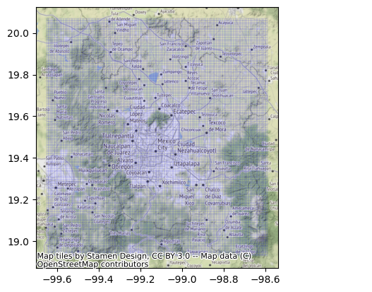
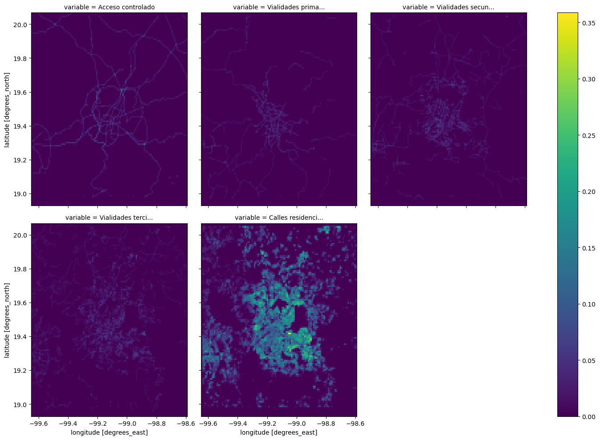
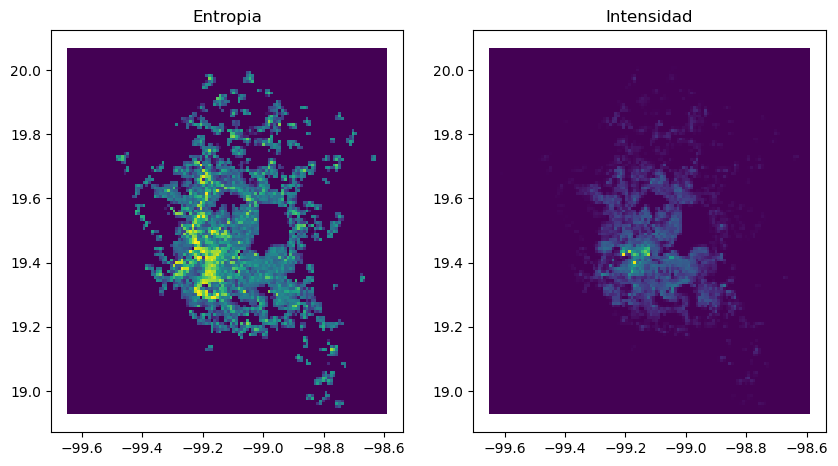
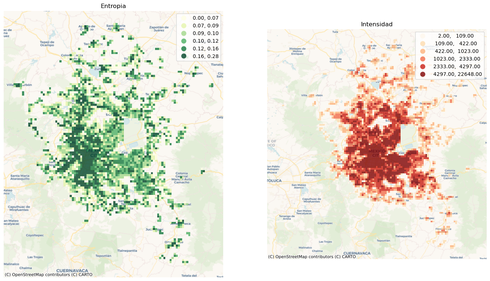

import geopandas as gpd
import pandas as pd
from pyLandUseMX.descargas import *
from pyLandUseMX.usodesuelo import *
from pyLandUseMX.denue import *
import contextily as cx
import os
import matplotlib.pyplot as pltZona Metropolitana
Este tutorial muestra el flujo completo para crear y analizar variables de uso de suelo y estructura urbana para una zoma metropolitana completa, en este caso la Zona Metropolitana del Valle de México.
Malla
Lo primero que vamos a hacer es crear la malla en la que estaremos integrando los datos
pth = descarga_raster_ejemplo()
malla = Malla.desde_raster(pth)
ax = malla.datos.boundary.plot(edgecolor="blue", linewidth=0.07)
ax = cx.add_basemap(ax, crs=malla.crs)El archivo ya está descargado
EPSG:4326
Red
Vamos a agregar en nuestra malla tres tipos diferentes de vialidades:
- Acceso controlado
- Primarias
- Secundarias
- Residenciales
Cada una de estas corresponde a un conjunto diferente de tag_id en los datos de OSM
# descargamos y leemos la red
pth_red = os.path.join(DOWNLOADS_PATH, "red_zmvm_completa.gpkg")
red = gpd.read_file(pth_red)
# definimos los tipos de vialidades y filtramos
id_acceso_c = [100, 101, 102, 103, 104, 105]
id_primarias = [106, 107]
id_secundarias = 108
id_terciarias = 109
id_residencial = 110
acceso_controlado = red.loc[red.tag_id.isin(id_acceso_c)]
primarias = red.loc[red.tag_id.isin(id_primarias)]
secundarias = red.loc[red.tag_id == id_secundarias]
terciarias = red.loc[red.tag_id == id_terciarias]
residenciales = red.loc[red.tag_id == id_residencial]Ya tenemos los datos para cada tipo de vialidad, ahora podemos agregarlos a nuestra malla
malla = (malla
.agrega_lineas(acceso_controlado, campo='Acceso controlado')
.agrega_lineas(primarias, campo='Vialidades primarias')
.agrega_lineas(secundarias, campo='Vialidades secundarias')
.agrega_lineas(terciarias, campo='Vialidades terciarias')
.agrega_lineas(residenciales, campo='Calles residenciales'))
malla.datos| geometry | grid_id | Acceso controlado | Vialidades primarias | Vialidades secundarias | Vialidades terciarias | Calles residenciales | |
|---|---|---|---|---|---|---|---|
| 0 | POLYGON ((-99.65011 20.06836, -99.65011 20.059... | 0 | 0.0 | 0.0 | 0.0 | 0.0 | 0.0 |
| 1 | POLYGON ((-99.64113 20.06836, -99.64113 20.059... | 1 | 0.0 | 0.0 | 0.0 | 0.0 | 0.0 |
| 2 | POLYGON ((-99.63215 20.06836, -99.63215 20.059... | 2 | 0.0 | 0.0 | 0.0 | 0.0 | 0.0 |
| 3 | POLYGON ((-99.62317 20.06836, -99.62317 20.059... | 3 | 0.0 | 0.0 | 0.0 | 0.0 | 0.0 |
| 4 | POLYGON ((-99.61418 20.06836, -99.61418 20.059... | 4 | 0.0 | 0.0 | 0.0 | 0.0 | 0.0 |
| ... | ... | ... | ... | ... | ... | ... | ... |
| 14963 | POLYGON ((-98.63502 18.93649, -98.63502 18.927... | 14963 | 0.0 | 0.0 | 0.0 | 0.0 | 0.0 |
| 14964 | POLYGON ((-98.62604 18.93649, -98.62604 18.927... | 14964 | 0.0 | 0.0 | 0.0 | 0.0 | 0.0 |
| 14965 | POLYGON ((-98.61705 18.93649, -98.61705 18.927... | 14965 | 0.0 | 0.0 | 0.0 | 0.0 | 0.0 |
| 14966 | POLYGON ((-98.60807 18.93649, -98.60807 18.927... | 14966 | 0.0 | 0.0 | 0.0 | 0.0 | 0.0 |
| 14967 | POLYGON ((-98.59909 18.93649, -98.59909 18.927... | 14967 | 0.0 | 0.0 | 0.0 | 0.0 | 0.0 |
14968 rows × 7 columns
rasters = malla.to_xarray()
(rasters
.to_array()
.plot(col = 'variable', col_wrap=3, figsize=(15, 10)))<xarray.plot.facetgrid.FacetGrid>
Usos de suelo
Vamos a usar una base con el Denue para toda la ZMVM del 2022.
- Agregar categorías de uso de suelo
- Agregar pesos a las unidades
pth_denue = os.path.join(DOWNLOADS_PATH, 'denue_2022_zmvm_completo.gpkg')
denue = Denue.desde_archivo(pth_denue)
categorias = {
'Manufacturas': ['^31.*5$', '^32.*5$', '^33.*5$'],
'Oficinas': ['^51', '^521', '^523', '^524', '^5312', '^5313', '^541', '^55'],
'Comercio': ['^46[123456]']
}
pesos = {
'0 a 5 personas': 2,
'6 a 10 personas': 8,
'11 a 30 personas': 20,
'31 a 50 personas': 40,
'51 a 100 personas': 75,
'101 a 250 personas': 175,
'251 y más personas': 300
}
usos = (denue
.pesa_unidades(pesos)
.agrega_en_usos(categorias))
usos.datos.loc[~usos.datos.Categoria.isnull()].head()| clee | denue_nombre | denue_razon_social | codigo_act | actividad_nombre | per_ocu | denue_via_tipo | denue_via_nombre | denue_via_ext1_tipo | denue_via_ext1_nombre | ... | denue_telefono | correoelec | www | tipoUniEco | denue_latitud | denue_longitud | denue_alta | geometry | pesos | Categoria | |
|---|---|---|---|---|---|---|---|---|---|---|---|---|---|---|---|---|---|---|---|---|---|
| 1 | 15096465912000751000000000U3 | NOVEDADES YULI | 465912 | Comercio al por menor de regalos | 0 a 5 personas | AVENIDA | INSURGENTES | AVENIDA | MORELOS | ... | Fijo | 19.90871265 | -99.14674938 | 2019-11 | POINT (-99.14675 19.90871) | 2 | Comercio | ||||
| 6 | 09005465912009041000000000U9 | KAZANA | 465912 | Comercio al por menor de regalos | 0 a 5 personas | AVENIDA | 1-A | CALLE | 32-A | ... | Fijo | 19.52497485 | -99.1695219 | 2019-11 | POINT (-99.16952 19.52497) | 2 | Comercio | ||||
| 64 | 09007463310004711000000000U7 | ZAPATERIA JOS JER | 463310 | Comercio al por menor de calzado | 0 a 5 personas | CALLE | 18 | CALLE | 3 | ... | Fijo | 19.30874225 | -99.08205671 | 2010-07 | POINT (-99.08206 19.30874) | 2 | Comercio | ||||
| 221 | 09015541110023561000000000U6 | ARRANGOIZ ABOGADOS, S.C. | ARRANGOIZ ABOGADOS SC | 541110 | Bufetes jurídicos | 0 a 5 personas | Durango 263 Col. Roma Norte | ... | Fijo | 19.419205 | -99.17030486 | 2020-11 | POINT (-99.17030 19.41921) | 2 | Oficinas | ||||||
| 223 | 09005464111004891000000000U2 | FARMACIA SAN JOSE | 464111 | Farmacias sin minisúper | 0 a 5 personas | CALLE | 310 | CALLE | 317 | ... | 5519006147 | Fijo | 19.49611382 | -99.0856781 | 2010-07 | POINT (-99.08568 19.49611) | 2 | Comercio |
5 rows × 44 columns
Ahora agregamos las categorías ponderadas a la malla
malla = malla.agrega_puntos(usos.datos, clasificacion='Categoria', pesos='pesos')
malla.datos.head()| grid_id | Comercio | Manufacturas | Oficinas | geometry | Acceso controlado | Vialidades primarias | Vialidades secundarias | Vialidades terciarias | Calles residenciales | |
|---|---|---|---|---|---|---|---|---|---|---|
| 0 | 0 | 0.0 | 0.0 | 0.0 | POLYGON ((-99.65011 20.06836, -99.65011 20.059... | 0.0 | 0.0 | 0.0 | 0.0 | 0.0 |
| 1 | 1 | 0.0 | 0.0 | 0.0 | POLYGON ((-99.64113 20.06836, -99.64113 20.059... | 0.0 | 0.0 | 0.0 | 0.0 | 0.0 |
| 2 | 2 | 0.0 | 0.0 | 0.0 | POLYGON ((-99.63215 20.06836, -99.63215 20.059... | 0.0 | 0.0 | 0.0 | 0.0 | 0.0 |
| 3 | 3 | 0.0 | 0.0 | 0.0 | POLYGON ((-99.62317 20.06836, -99.62317 20.059... | 0.0 | 0.0 | 0.0 | 0.0 | 0.0 |
| 4 | 4 | 0.0 | 0.0 | 0.0 | POLYGON ((-99.61418 20.06836, -99.61418 20.059... | 0.0 | 0.0 | 0.0 | 0.0 | 0.0 |
| ... | ... | ... | ... | ... | ... | ... | ... | ... | ... | ... |
| 14963 | 14963 | 0.0 | 0.0 | 0.0 | POLYGON ((-98.63502 18.93649, -98.63502 18.927... | 0.0 | 0.0 | 0.0 | 0.0 | 0.0 |
| 14964 | 14964 | 0.0 | 0.0 | 0.0 | POLYGON ((-98.62604 18.93649, -98.62604 18.927... | 0.0 | 0.0 | 0.0 | 0.0 | 0.0 |
| 14965 | 14965 | 0.0 | 0.0 | 0.0 | POLYGON ((-98.61705 18.93649, -98.61705 18.927... | 0.0 | 0.0 | 0.0 | 0.0 | 0.0 |
| 14966 | 14966 | 0.0 | 0.0 | 0.0 | POLYGON ((-98.60807 18.93649, -98.60807 18.927... | 0.0 | 0.0 | 0.0 | 0.0 | 0.0 |
| 14967 | 14967 | 0.0 | 0.0 | 0.0 | POLYGON ((-98.59909 18.93649, -98.59909 18.927... | 0.0 | 0.0 | 0.0 | 0.0 | 0.0 |
14968 rows × 10 columns
Variables censales
Vamos a agragar algunas variables del censo de población y vivienda.
- Viviendas habitadas (VIVPAR_HAB)
- Viviendas con auto (VPH_AUTOM)
- Población total (POBTOT)
pth_manzanas = os.path.join(DOWNLOADS_PATH, 'manzanas_datos.gpkg')
manzanas = gpd.read_file(pth_manzanas)
crs_original = malla.crs
malla = (malla
.to_crs(manzanas.crs)
.agrega_manzanas(manzanas, {'VIVPAR_HAB': 'sum',
'VPH_AUTOM': 'sum',
'POBTOT': 'sum'},
'centro')
.to_crs(crs_original)
)
malla.datos.head()/home/plablo/git/pyLandUseMX/pyLandUseMX/usodesuelo.py:226: UserWarning: Geometry is in a geographic CRS. Results from 'centroid' are likely incorrect. Use 'GeoSeries.to_crs()' to re-project geometries to a projected CRS before this operation.
sin_asignar['geometry'] = sin_asignar['geometry'].centroid| grid_id | Comercio | Manufacturas | Oficinas | geometry | Acceso controlado | Vialidades primarias | Vialidades secundarias | Vialidades terciarias | Calles residenciales | VIVPAR_HAB | VPH_AUTOM | POBTOT | |
|---|---|---|---|---|---|---|---|---|---|---|---|---|---|
| 0 | 0 | 0.0 | 0.0 | 0.0 | POLYGON ((-99.65011 20.06836, -99.65011 20.059... | 0.0 | 0.0 | 0.0 | 0.0 | 0.0 | 0.0 | 0.0 | 0.0 |
| 1 | 1 | 0.0 | 0.0 | 0.0 | POLYGON ((-99.64113 20.06836, -99.64113 20.059... | 0.0 | 0.0 | 0.0 | 0.0 | 0.0 | 0.0 | 0.0 | 0.0 |
| 2 | 2 | 0.0 | 0.0 | 0.0 | POLYGON ((-99.63215 20.06836, -99.63215 20.059... | 0.0 | 0.0 | 0.0 | 0.0 | 0.0 | 0.0 | 0.0 | 0.0 |
| 3 | 3 | 0.0 | 0.0 | 0.0 | POLYGON ((-99.62317 20.06836, -99.62317 20.059... | 0.0 | 0.0 | 0.0 | 0.0 | 0.0 | 0.0 | 0.0 | 0.0 |
| 4 | 4 | 0.0 | 0.0 | 0.0 | POLYGON ((-99.61418 20.06836, -99.61418 20.059... | 0.0 | 0.0 | 0.0 | 0.0 | 0.0 | 0.0 | 0.0 | 0.0 |
Cálculo de índices
Ahora vamos a calcular los ínc¿dices de entropía e intensidad utilizando como variables de uso de suelo Manufacturas, Comercio, Oficinas y VIVPAR_HAB el resto de las variables las vamos a guardar como variables de estructura urbana.
us = UsoDeSuelo(malla,
vars_uso=['Comercio', 'Manufacturas', 'Oficinas', 'VIVPAR_HAB'],
vars_mc=['Acceso controlado', 'Vialidades primarias', 'Vialidades secundarias',
'Vialidades terciarias', 'Calles residenciales', 'VPH_AUTOM', 'POBTOT'])
us = us.calcula_mezclas()
fig, (ax0, ax1) = plt.subplots(1,2, figsize=(10,20))
ax0 = us.soporte.datos.plot('entropia', ax=ax0)
ax0 = ax0.set_title("Entropia")
ax1 = us.soporte.datos.plot('intensidad', ax=ax1)
ax1 = ax1.set_title("Intensidad")
fig, (ax0, ax1) = plt.subplots(1,2, figsize=(17,34))
mapea_entropia = us.soporte.datos.loc[us.soporte.datos.entropia > 0]
ax0 = mapea_entropia.plot('entropia', ax=ax0, cmap='YlGn', scheme='quantiles', k=6, legend=True, alpha=0.8)
ax0.set_title("Entropia")
ax0.set_axis_off()
cx.add_basemap(ax0, crs=malla.crs, source=cx.providers.CartoDB.Voyager)
mapea_intensidad = us.soporte.datos.loc[us.soporte.datos.intensidad > 0]
ax1 = mapea_intensidad.plot('intensidad', ax=ax1, cmap='OrRd', scheme='quantiles', k=6, legend=True, alpha=0.8)
ax1.set_title("Intensidad")
ax1.set_axis_off()
cx.add_basemap(ax1, crs=malla.crs, source=cx.providers.CartoDB.Voyager)